Svenstrup
Gräulicher Granit
Höhe ü. d. Erdboden: 157 cm
Breite: 100 cm
Dicke oben: 20 cm
unten: 33 cm
Runenhöhe: zw. 9 und 12 cm
Runeninschrift :
Thorgot errichtete diesen Stein für Asved, seinen Vater. Er begegnete Missetat, Feigheit im Gefolge mit Ildes Söhnen.

45 - Svenstrup (oder Kjellerup Stein) - Letztes Update 09.09.2025
Listennummer : DR kein / DK NJy 75
| Navidaten: 56.59932 9.99864 oder: Randersvej 30, 9550 Mariager |
Transliteration: þurkutr : risþi : stin : þąnsi : iftiR : ąsuiþ : faþur : sin : hąn : uai : fan : arskab : | miþ : ilta : sunum
Dieser Stein ist einer der wenigen dänischen Runensteine, der von der Form her zurechtgehauen wurde. Von der Seite her gesehen ist er schmal wie ein moderner Grabstein. Er wurde erst am 17.02.1964 vom landwirtschaftlichen Gehilfen Villy Nielsen an der höchstgelegenen Stelle (ca. 45m über NN) eines Feldes, gut 300 m s-sw vom Hofgut Kjellerup bei Feldarbeiten gefunden, als sein Pflug auf ihn stieß. Dort wurde der Standort einer ehemaligen, nun verschwundenen Kirche festgestellt, bei der er womöglich in senkundärer Verwendung genutzt worden war.
Er steht heute an der Zufahrt zum Hofgut Kjellerup mit Herrenhaus, der sich an der Landstraße zwischen Randers und Mariager - kurz nach der Abzweigung nach Svenstrup - auf der linken Seite befindet.
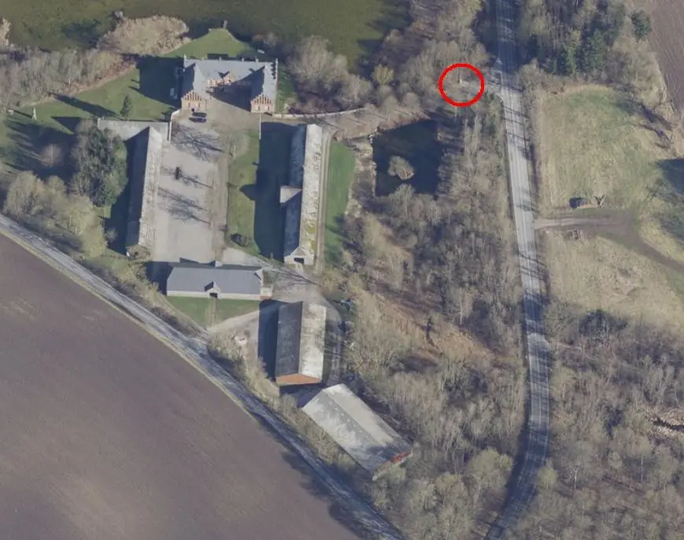
Dies ist ein Luftfoto vom 02.04.2023 von Skråfoto, das den Standort des Runenstein (von mir rot ein gekreist) beim Hofgut Kjellerup mit dem Kjellerup See im Hintergrund zeigt. Skråfoto ist eine Webanwendung, die von Klimadatastyrelsen weltweit kostenlos bereitgestellt wird - Freie Nutzung unter Beachtung der Lizenz: CC BY 4.0. Die Aufnahmen werden seit 2017 alle zwei Jahre erneuert und neben einer Senkrechtaufnahme wird ein Schrägbild aus jeder Himmelsrichtung angeboten, das man über eine Adresssuche aufrufen kann.
In dieser Inschrift erfahren wir, dass Asved zusammen mit anderen Menschen aus der gleichen Gegend, den Söhnen eines hervorragenden Mannes namens Ilde, an einem Wikingerzug beteiligt war und dass er zusammen mit diesen Männern in einem Kampf fiel, wobei der Gegner unfaire Mittel benutzte.
Die Runologen diskutieren aber seit Jahren, wobei verschiedene Interpretationen vorgeschlagen wurden. Während Anders Bæksted die Interpretation des Endes der Inschrift aufgab: keine der bisher vorgeschlagenen Interpretationen scheint so überzeugend oder wahrscheinlich, dass sie hier wiedergegeben werden sollte (Bæksted, Jyske runestene, 1968, S. 69ff.), kritisierte Niels Åge Nielsen die von Erik Moltke (*04.04.1901 - 19.10.1984, Runologe, Historiker - link-LIVES)
 Bildquelle: Scan von Buchumschlag "Runerne i Danmark og ders
oprindelse" - Erik Moltke - 1976 - Lizenz:
CC-BY-SA
Bildquelle: Scan von Buchumschlag "Runerne i Danmark og ders
oprindelse" - Erik Moltke - 1976 - Lizenz:
CC-BY-SA
vorgeschlagene Interpretation aus 1976 und gab eine veränderte Interpretation: "Torgot hob diesen Stein nach Asvid, seinem Vater. Er traf Ungerechtigkeit, Feigheit in der Gesellschaft von Ildes Söhnen". Nielsen sieht 'uai' als Substantiv im Gegensatz zu Moltke, der das Wort als Adverb wahrnimmt (Nielsen, Danske runeindskrifter, 1983, S. 174 ff.). Fred Wulf übersetzt "bei Ildes Söhnen" und sieht Ildes Söhne als Täter. Eva Rode, Redakteurin des Altnordischen Prosa-Wörterbuchs, nimmt "uai" lieber als Interjektion wahr, woraufhin sie "Er - ach und wehe - fand Feigheit in Eldes Söhnen" übersetzt (Quelle: Danske Runeindskrifter).
Eine Runeninschrift mit ähnlichem Inhalt gibt es innerhalb Dänemarks ansonsten nur noch in Bornholm - Vester Marie 5 (runesdb.de) - dort wird von einem Skogi berichtet, der den unschuldig getöteten Alfar betrogen hat.
Die Inschrift wird von den Runologen in die Zeit von 970 - 1020 datiert. Sie verläuft von links unten im Bogen entlang der Steinkontur nach rechts unten. Sie endet in dem mittleren Runenband, das von unten nach oben gelesen wird.
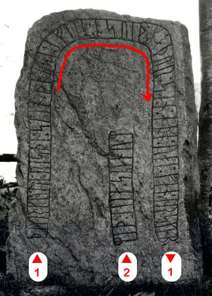
Leserichtung von mir eingezeichnet - Bildquelle: Fotograf Erik Moltke - Digitale Sammlung des Nationalmuseums in Kopenhagen - Lizenz: CC-BY-SAIm Rahmen meiner 2022er Jütland Wikinger-Tour war ich am Dienstag, 14.06.2022, vor Ort und habe nach einer kleinen Säuberungs-/Rodungsaktion rund um den Runenstein diese Fotografien gemacht:
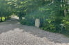 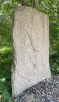 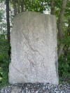 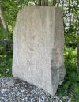 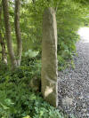 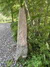 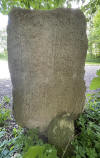 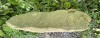 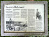


Bei meiner Wikinger-Rundfahrt am Freitag, 26.08.2016, war ich auch am Kjellerup Bauernhof und habe diese Fotos vom Svenstrup Runenstein gefertigt:
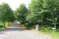 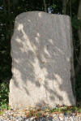 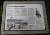 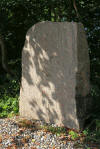 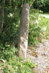 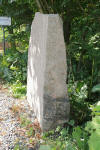


Mein Foto im linken Frame ist vermutlich am Sonntag, 02.07.2000, aufgenommen, was ich aber nicht mehr mit letzter Sicherheit sagen kann. Darauf sieht man aber die Runeninschrift deutlich besser als in den Jahren 2016 und 2022.
Erik Moltke (siehe oben) hat diese sw Aufnahmen im Jahre 1964 unmittelbar nach seiner Entdeckung gefertigt.
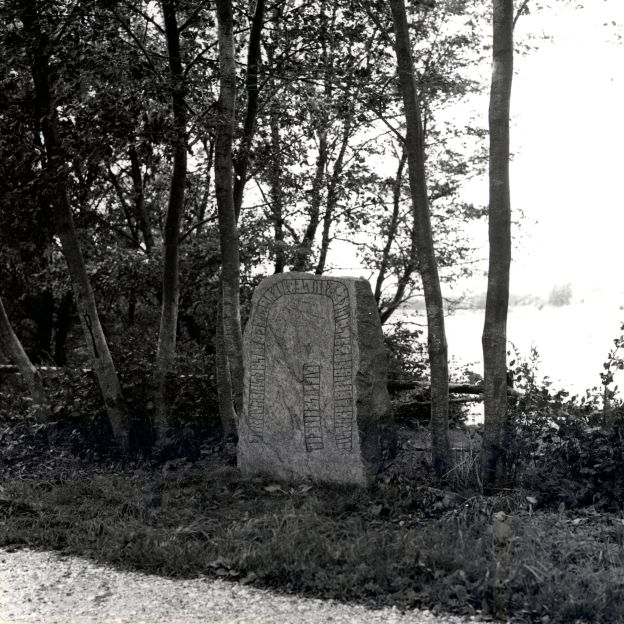
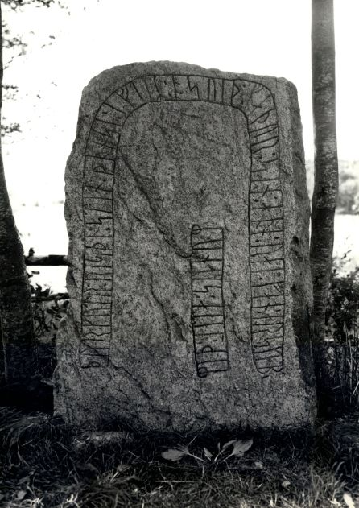
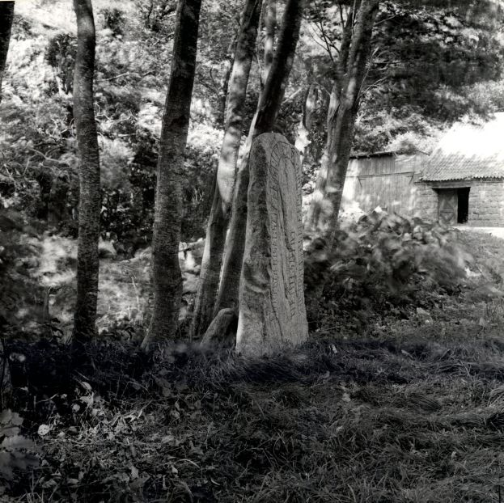
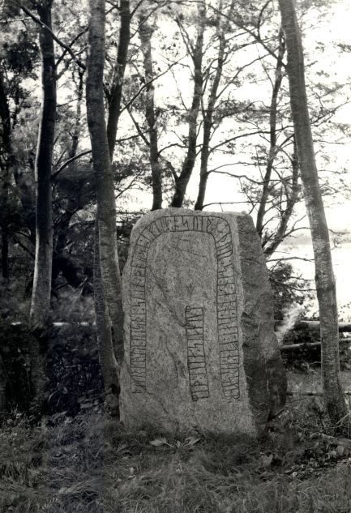
Quelle: Digitale Sammlung des Nationalmuseums in Kopenhagen - Lizenz: CC-BY-SA
Im Vorfeld zu dem 2016 erschienenen Buch von Lisbeth M. Imer (*1973, Runologin am Nationalmuseum Kopenhagen) "Danmarks Runesten - en fortælling" reiste sie mit dem Fotografen Roberto Fortuna zur Bestandsaufnahme durch die Lande. Dieser hat die Runensteine mit Schräglicht aufgenommen und darüber wirklich herausragende Fotos erzielt. Diese Fotografien stammen vom 24. Oktober 2012.
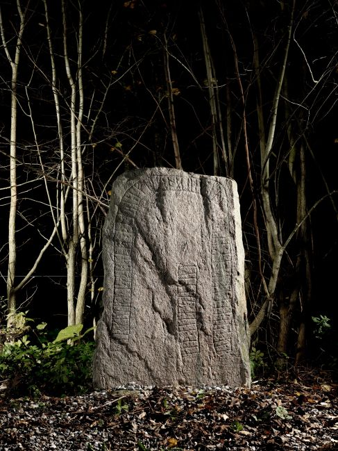
Quelle: Digitale Sammlung des Nationalmuseums in Kopenhagen - Lizenz: CC-BY-SA
Den Eintrag zu diesem Runenstein aus der dänischen Runen Datenbank im Internet kann man hier abrufen.
Die Informationen in "Fund og Fortidsminder" zu dem Runenstein finden sich hier.
Über diesen Link finden sich zu dem Runenstein Informationen des Forschungsprojektes "Runes" der Akademie der Wissenschaften zu Göttingen.
Über die Webseite von www.biopix-foto.de kann man ein Foto dieses Runensteins mit rot nachgezeichneten Runen anschauen, was natürlich eine deutlich verbesserte Ansicht darstellt, auch wenn die Runen im Vergleich zu anderen Runensteinen eigentlich gut lesbar sind.
Diese Internetseite von "fortidsmindeguide.dk" beinhaltet auch umfassende Informationen zu diesem Runenstein von Svenstrup.